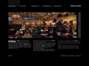
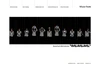
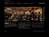
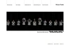
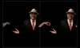
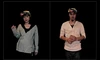
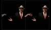
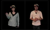

 



qubibi: A label by Kazumasa Teshigawara focused on Digital Art
Kazumasa Teshigawara: Artist, Web Designer. Born in Ikebukuro, Tokyo. Used to live with mother in the beginning. Later moved in with a new family. Was taken around bars while still young. Hostesses used to like me a lot. I stopped going to school. Played game at home. Cried out of fear when collectors banged at the door for money. Father ran away, got caught. Graduated elementary school. Got into an accident and hurt my neck. Father came back. Father died. Graduated secondary high. Worked at Nihonbashi Textile Processing Factory. Got into an accident, almost died, and hurt my neck. Got into music. Quit point drawing. Bought a Mac. Met some weird people. Said goodbye. Unknowingly entered a bad content design firm and quit immediately. Was scared for days after I quit because the company got hold of me. Worked and quit a number of jobs. At age 21, discovered the fun of design. Eventually got married. Had a kid. Got separated. Got the kid. Taking care of the kid. Working quietly under the label 'qubibi'. Would like to make a lot of things. (Written in 2009)
勅使河原一雅: 1977年東京池袋に生まれた。はじめは母親と二人で過ごした。途中から新しい家族の家で過ごした。幼い頃から飲み屋を連れ回された。当時はホステスにもてた。学校は登校拒否をしていた。家ではゲームをしていた。ヤクザが怖くて泣きながら警察を呼んだ。父が居なくなった。捕まった。小学校卒業。交通事故にあい首を痛めた。父が帰ってきた。父が死んだ。中学校卒業。日本橋服地加工工場に勤めた。交通事故にあい死にそうになり首を痛めた。音楽に夢中になった。点描をやめた。中古のMacを買った。何人かのおかしな人に出会った。別れた。知らず悪い企画会社に入るがすぐ辞めた。辞めた後脅されびくびくした。いくつかの職場を転々とした。21歳、デザインをすることが楽しくなった。やがて結婚した。子供が生まれた。離婚した。子供を引き取った。首美を起ち上げた。子供を育てる。沢山のものを作りたい。(2009年 / 2016年ASA-CHANG&巡礼「告白」の歌詞に採用 )

qubi[at]qubibi.org
Lecturer
Tama Art University Faculty of Art and Design Department of Integrated Design 多摩美術大学統合デザイン学科, 2014 - 2024
Solo Exhibitions
Last Tango at Nguyen Wahed (NYC) Dec 15, 2024 - Jan 31, 2025
Qubibi Solo Show Part1&2 at Galerie Data (Paris) Apr 26, 2023 - Jun 17, 2023
wiwizn Part III at Cromwell Place (London) Jan 26, 2023 - Jan 29, 2023
Worm Fabric ミミズの反物 at Nadoya (Tokyo) Sep 10, 2021 - 3 Oct, 2021
Qubibi Exhibition at the MuDA Zurich (Museum of Digital Art, Zurich) Sep 9, 2017 – Jan 28, 2018
Kanemasu Image Exhibition at the Kanemasu Brewery No.2 Gallery (Nigata) 2016
hello world Exhibition at the FRAMED* SPACE Omotesando (Tokyo) 2012
Exhibitions
MATTER & DATA by objkt at the Digital Art Mile (Basel) 2024
Dimensionality at Untitled Art fair Art Basel (Miami) 2023
SOURCE by Feral File (Online) 2023
TECHNO TERRAIN: NATURE IN THE AGE OF THE METAVERS at Expanded. Art (Berlin) 2023
NFT Show Europe (Valencia) 2023
VAULT (fakewhale permanent collection) 2023
The Tokyo Collection by Bright Moments (Tokyo) 2023
Art Dubai by objkt.one x fakewhale (Dubai) 2023
Magical Realism at Cromwell Place (London) 2022
wiwizn Part II (Online) 2022
NFT POSITIONS Berlin Art Fair at Tempelhof Airport (Berlin) 2022
wiwizn Part I : HAVE YOU EVER SEEN A DANCING WORM? Curated by@artnome (Online) 2022
Proof of People - NFT Festival for Art & Culture at fabric London (London) 2022
COLORFRAME - A VISION OF COLOR IN GENERATIVE ART at Plateforme Paris (Paris) 2022
AUDIO ARCHITECTURE in Taipei at the Huashan1914・Creative Park (Taipei) 2020
AUDIO ARCHITECTURE 音のアーキテクチャ展 at the 21_21 DESIGN SIGHT (Tokyo) 2018
Meiji-Do Wonders #01 "You and Immunity. Exhibition" at the SO-CAL LINK GALLERY Omotesando (Tokyo) 2018
frameless 15 at the Einstein Kultur (München) 2017
Shinjuku Creators Festa 2017 (Tokyo) 2017
Tinypalace-alternative games festival at the Interim & Stellwerk (Kassel) 2016
Shinjuku Creators Festa 2016 (Tokyo) 2016
The Power to Change - Japan Media Arts Festival 20th Anniversary Exhibition at the Arts 3331 (Tokyo) 2016
Digital Media and Japanese Graphic Design – Its Past and Future at the Tokyo Midtown Design Hub (Tokyo) 2016
Shinjuku Creators Festa 2015 (Tokyo) 2015
GLACIER FORMATION－AGC Milano Salone 2015 at the Milan Design Week (Milan) 2015
Shinjuku Creators Festa 2014 (Tokyo) 2014
Illuminating Graphics at the Ginza Creation Gallery G8 (Tokyo) 2014
Japan Media Arts Festival in Yamanashi at the Yamanashi Prefectural library (Yamanashi) 2013
Japan Media Arts Festival Exhibition at the National Art Center (Tokyo) 2012
AIRQUAKES at the AIR (Moscow) 2012
Tokyo Graphic Passport at the Centre Pompidou (Paris) 2012
Japan Media Arts Festival Exhibition at the National Art Center (Tokyo) 2011
404 Not Fashion at the TABLOID (Tokyo) 2010
parallel #01 at the PUBLIC/IMAGE.3D (Tokyo) 2010
Japan Media Arts Festival Exhibition at the National Art Center (Tokyo) 2007
Meiji-Do Wonders #01 "You and Immunity. Exhibition" at the SO-CAL LINK GALLERY Omotesando (Tokyo) 2018
frameless 15 at the Einstein Kultur (München) 2017
Shinjuku Creators Festa 2017 (Tokyo) 2017
Tinypalace-alternative games festival at the Interim & Stellwerk (Kassel) 2016
Shinjuku Creators Festa 2016 (Tokyo) 2016
The Power to Change - Japan Media Arts Festival 20th Anniversary Exhibition at the Arts 3331 (Tokyo) 2016
Digital Media and Japanese Graphic Design – Its Past and Future at the Tokyo Midtown Design Hub (Tokyo) 2016
Shinjuku Creators Festa 2015 (Tokyo) 2015
GLACIER FORMATION－AGC Milano Salone 2015 at the Milan Design Week (Milan) 2015
Shinjuku Creators Festa 2014 (Tokyo) 2014
Illuminating Graphics at the Ginza Creation Gallery G8 (Tokyo) 2014
Japan Media Arts Festival in Yamanashi at the Yamanashi Prefectural library (Yamanashi) 2013
Japan Media Arts Festival Exhibition at the National Art Center (Tokyo) 2012
AIRQUAKES at the AIR (Moscow) 2012
Tokyo Graphic Passport at the Centre Pompidou (Paris) 2012
Japan Media Arts Festival Exhibition at the National Art Center (Tokyo) 2011
404 Not Fashion at the TABLOID (Tokyo) 2010
parallel #01 at the PUBLIC/IMAGE.3D (Tokyo) 2010
Japan Media Arts Festival Exhibition at the National Art Center (Tokyo) 2007
Awards
Digital Ehon Award 2020 デジタルえほんアワード2020 Prize Winners 2020
21th The Japan Media Arts Festival 第21回文化庁メディア芸術祭 Recommended works of Art Division 2018
YAHOO JAPAN INTERNET Creative Award 2013 Gold Prize 2013
15th The Japan Media Arts Festival 第15回文化庁メディア芸術祭 Recommended works of Art Division 2012
15th The Japan Media Arts Festival 第15回文化庁メディア芸術祭 Recommended works of Entertainment Division 2012
Asia Pacific advertising Festival 2011 Bronze Prize 2011
14th The Japan Media Arts Festival 第14回文化庁メディア芸術祭 Recommended works of Art Division 2011
Asia Pacific advertising Festival 2008 Bronze Prize 2008
6th Tokyo Interactive Ad Awards Finalist 2008
The AMD 2007 Award Naomi Enami Prize 2007
5th Tokyo Interactive Ad Awards Bronze 2007
11th The Japan Media Arts Festival 第11回文化庁メディア芸術祭 Excellence Prize of Entertainment Division 2007
2007 One Show Interactive Gold Prize 2007
Cannes Lions 2007 Cyber Lions Silver Prize 2007
D&AD Global Awards 2007 Yellow Pencil 2007
Audiovisual Performances (Selected)
Concert of Jofukuji at the Rinzai Kenchoji School Jofukuji (Tokyo); Performance by Masahiko Satoh, Qubibi 2020
Concert of Jofukuji at the Rinzai Kenchoji School Jofukuji (Tokyo); Performance by Tomoki Tai, Sachiko Nagata, and Qubibi 2018
Pink Soup Party at the the Super Deluxe (Tokyo); Performance by Daisuke Tanabe and Qubibi 2018
crewimburnny Presents SAYONARA DESIGN KOISHIKAWA!! at the DESIGN Koishikawa (Tokyo); Performance by Daisuke Tanabe and Qubibi 2018
Soejima Night vol.4 - a memorial concert for Teruto Soejima at the Store House (Tokyo); Performance by Masahiko Satoh, Akira Sakata, Yoshizaburo Toyozumi, and Qubibi 2017
crewimburnny's performance work: KrewinburNny at the DESIGN Koishikawa (Tokyo) 2017
ASA-CHANG & JUNRAY: Mahou Release Event at the DOMMUNE; Performance by ASA-CHANG & JUNRAY and Qubibi 2016
The World - Tokyo Experimental Festival Vol.10 Performance at the Ryogoku Monten Hall (Tokyo); Performance by Takero Sekijima, Taro Ishida, and Qubibi 2015
Yanaka Music Room at the the HAGISO (Tokyo); Performance by Takero Sekijima, Taro Ishida, and Qubibi 2015
The World at the Tokyo University of the Arts Hall 7 (Tokyo); Performance by Takero Sekijima, Taro Ishida, and Qubibi 2015
Concert for Music and Image at the Toyo Ito Museum of Architecture, Imabar (Omishima); Performance by Taro Ishida and Qubibi 2015
MADE IN JAPAN Audio Visual Concert at Lithuania; Performance by Fingalick, Münpauzn, and Qubibi 2015
Aufheben! Vol.2 - Kazumasa Teshigawara × ASA-CHANG & JUNRAY at the Aoyama Cay (Tokyo); Performance by ASA-CHANG & JUNRAY and Qubibi 2014
Concert of Jofukuji at the Rinzai Kenchoji School Jofukuji (Tokyo); Performance by Masahiko Satoh and Qubibi 2013
VIDEO LISTENING at the Super Deluxe (Tokyo); Performance by Pardon Kimura, Yoshiyuki Ichiraku, and Qubibi 2013
Early 21st Century Music vol.2 at the Last Waltz (Tokyo); Performance by Tori Kudo, Mako Hasegawa, and Qubibi 2013
Pardon Kimura + OoruTaichi + Kazumasa Teshigawara at the the Super Deluxe (Tokyo); 2012
SOUND LIGHT SEA LIGHT at the FORESTLIMIT (Tokyo); Performance by Yuji Katsui, Pardon Kimura, and Qubibi 2012
Republic Vol.9 - JAPANESE MOTION GRAPHIC CREATORS 2012 Release Party at the WOMB (Tokyo); Performance by sim and Qubibi 2012
New Friend at the SECO (Tokyo); Performance by Asa-Chang, Pardon Kimura, and Qubibi 2012
Music and Image at the Koen Dori Classics (Tokyo); Performance by Masahiko Satoh and Qubibi 2012
Heavenly Body at the SECO (Tokyo); Performance by Masahiko Satoh and Qubibi 2012
Takuya Takahashi + Kazumasa Teshigawara at the the FORESTLIMIT (Tokyo); 2011
Republic Vol.8 at the WOMB (Tokyo); Performance by Shhhhh and Qubibi 2011
Republic Vol.7 - JAPANESE MOTION GRAPHIC CREATORS 2011 Release Party at the WOMB (Tokyo); Performance by L?K?O and Qubibi 2011
Talks (Selected)
BrightMoments Tokyo Generative Art Panel at Parco Shibuya (Tokyo) 2023
Talk by Keita Onishi, Ryo Orikasa, and Qubibi at the 21_21 DESIGN SIGHT (Tokyo) 2018
AUDIO ARCHITECTURE Exhibition Talk Event at the DOMMUNE 2018
Unity Developer's Delight at the DMM.com Lab (Tokyo) 2017
ASA-CHANG & JUNRAY：MAHOU Album Release Event at the DOMMUNE; Talk by ASA-CHANG & JUNRAY, Kouki Tange, and Qubibi 2016
Japan Baltic Design Week 2015 (Lithuania) 2015
Judge at the Yahoo! Japan Night's Internet Creative World (Tokyo) 2014
Creative Workshop - Tokyo DESIGNPLEX (Tokyo) 2013
Special Open Seminar - SOZOSHA COLLEGE OF DESIGN (Osaka) 2013
FITC TOKYO 2011 at the Cocoon Tower Hall (Tokyo) 2011
Talk by Yugo Nakamura and Qubibi at the PUBLIC/IMAGE.3D (Tokyo) 2010
Judge at the 1-click Award 2009 Interactive division (Tokyo) 2009
Design Conference HIGH5 at the Osanbashi Hall (Yokohama) 2007
Media (Selected)
Featured: Bijutsu Techo (Web) 2025
Featured: THE ART NEWSPAPER (Web & Newspaper) 2024
Featured: On NFTs - TASCHEN (Book) 2024
Interview: Feral File Journal (Web) 2023
Featured: Gorilla Sun Blog (Web) 2023
Interview: Expanded.Art (Web) 2023
Featured: Le Random (Web) 2023
Featured: FW LOG (Web) 2023
Interview: Bright Moments (Web) 2023
Featured: ARTouch (Web) 2023
Interview: RIGHT CLICK SAVE (Web) 2023
Interview: GatherArt (Web) 2022
Interview: Kaloh's Newsletter 2022
Featured: THE NEW CREATOR ECONOMY (Book) 2022
Interview: verse (Web) 2022
Interview: TD (Web) 2022
Interview: Tez Art Fund (Web) 2022
Featured: Qubibi Exhibition at the MuDA Zurich - Bijutsu Techo 2018 January Issue 2018
Featured: Digital Media and Graphic Design in Japan - Its Past and Future (Book) 2017
Interview: Millions of playback age music video - Commercial Photo (Magazine) 2016
Featured: Interaction Design (Book) 2014
Interview: CAREER HACK (Website) 2014
Featured: kettle (Magazine) 2013
Interview: Web Designning (Magazine) 2012
Featured: JAPANESE MOTION GRAPHIC CREATORS 2012 (Book) 2012
Featured: GIF BOOK (Book) 2012
Featured: Designing Tumblr (Book) 2012
Interview: THEARTISTANDHISMODEL (Website) 2012
Featured: transmission Magazine Issue 01 (New York-based print publication) 2012
Interview: Where do interactive ads go? - Commercial Photo (Magazine) 2011
Featured: JAPANESE MOTION GRAPHIC CREATORS 2011 (Book) 2011
Interview: Louis Vuitton - Digital Discoveries (Website) 2010
Interview: The Secret Base of Creator - CINRA.NET (Website) 2010
Contribution: DIRECTOR'S MAGAZINE (Magazine) 2010
Featured: JAPANESE MOTION GRAPHIC CREATORS 2010 (Book) 2010
Contribution: Web Design Professional (Book) 2009
Featured: Plapp (Website) 2007
Interview: CBC.NET (Website) 2006